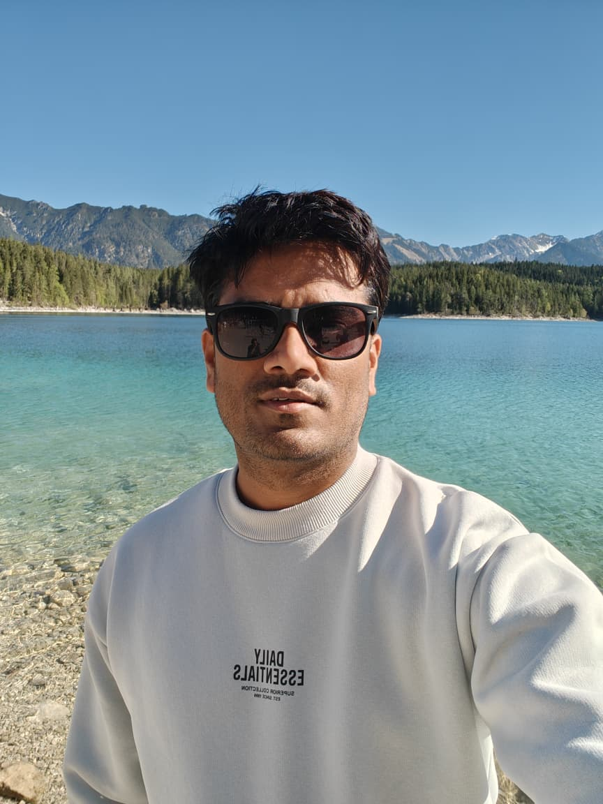

I am a Ph.D. researcher in Computer Science and Engineering at IIT Gandhinagar, working with Prof. Shanmuganathan Raman. My research focuses on computer vision, generative models, image restoration, and hyperspectral imaging.